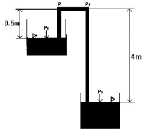
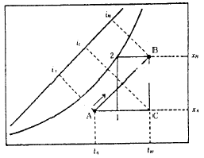
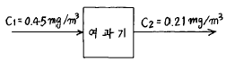
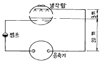
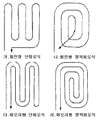
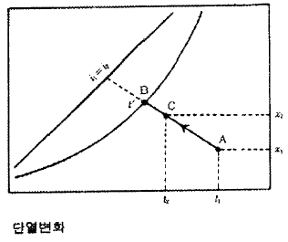
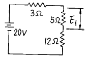

건축설비기사 (2003-08-31 기출문제)
1과목: 건축일반
1. 돌쌓기 구조에 관한 기술 중 틀린 것은 어느 것인가?
- 수평력에 강하며 내구적이다.
- 조적식 구조에 속한다.
- 안산암은 강도와 내구성이 크므로 주로 구조용으로 사용된다.
- 실내 유효면적이 줄어드는 단점이 있다.
(정답률: 알수없음)

2. 다음 계단에 관한 설명 중 틀린 것은?
- 계단 손잡이는 계단으로부터 높이 85cm 위치에 설치한다.
- 디딤판이 계속될 때 중간에 단이 없이 넓게 되어 다리쉼과 돌림 등에 쓰이는 부분을 계단참이라 한다.
- 우리나라에서는 일반적으로 단나비 30㎝, 단높이 18㎝ 를 표준으로 한다.
- 계단에 둘러싸인 공간을 계단홀이라 하고, 계단 앞의 넓은 공간을 계단통이라 한다.
(정답률: 47%)
3. 알루미늄 새시의 특징이 아닌 것은?
- 여닫음은 강제창호보다 투박하다.
- 공작이 자유롭고 기밀성이 있다.
- 콘크리트나 모르터에 직접 접하면 부식되기 쉽다.
- 은백색의 광택을 가지며, 광선 및 열의 반사율이 높다.
(정답률: 80%)
4. 주택의 동선계획에 관한 설명 중 옳지 않은 것은?
- 동선은 일상생활의 움직임을 표시하는 선이며, 동선이 가지는 요소는 빈도, 속도, 하중의 세 가지가 있다.
- 동선에는 공간이 필요하고 가구를 둘 수 없다.
- 동선은 가능한한 굵고 짧게 함이 좋다.
- 다른 종류의 동선과는 가능한한 근접교차시켜 편하게 한다.
(정답률: 73%)
5. 임대사무소 건물에서 5분간에 120명을 운반하려면 엘리베이터는 몇 대를 설치해야 하는가? (단,정원수는 15명이고 일주시간은 120초임)
- 2대
- 4대
- 6대
- 8대
(정답률: 67%)
6. 사무소 계획에서 사무실의 크기를 결정하는데 가장 기본이 되는 요소는?
- 사무원수
- 사무종류
- 대지형태
- 사무실위치
(정답률: 89%)
7. 병원의 간호사 대기소에 대한 다음 설명중 가장 부적당한 것은 어느 것인가?
- 1개소의 간호사 대기소에서 관리하는 병상수는 30 ∼ 40개소 이하로 한다.
- 간호사의 보행거리는 24m 이내가 되도록 한다.
- 가급적 각 간호단위, 각층 및 동별로 설치한다.
- 계단, 엘리베이터실과는 떨어진 곳에 설치한다.
(정답률: 알수없음)
8. 결로 현상의 원인과 가장 거리가 먼 것은?
- 환기 회수의 증가
- 구조재의 열적 특성
- 실내습기의 과다 발생
- 실내외의 과다한 온도차
(정답률: 알수없음)
9. 음의 세기의 레벨(sound intensity level)의 단위는?
- ㎐
- N/m2
- W/m2
- ㏈
(정답률: 67%)
10. 실내음향에 대한 설명으로 옳지 않은 것은?
- 음의 계속시간이 길어지면 높이 감각은 둔해진다.
- 음은 실내에 동일하게 가도록 한다.
- 계획상 멀리 전달되게 하기도 하고 가까이에서 소멸되도록 하기도 한다.
- 청중이 많을수록 흡음력이 커서 잔향시간이 적어진다.
(정답률: 50%)
11. 흡음재료 및 구조의 특성을 설명한 내용으로 옳은 것은?
- 공명형 흡음재들은 특정주파수 대역의 흡음을 목적으로 하는 경우에 사용된다.
- 다공성 흡음재는 특히 저주파 대역에서 높은 흡음률을 나타낸다.
- 섬유계열의 흡음재들은 그 두께를 증가시킬수록 저주파 대역의 음에 대한 흡음력이 감소된다.
- 판진동 흡음재들은 일반적으로 고주파 대역의 음에 대한 높은 흡음력을 나타낸다.
(정답률: 55%)
12. 철근 콘크리트 보에 대한 설명 중 틀린 것은?
- 중요한 보로서 압축측에도 철근을 배근한 것을 복근 보라 한다.
- 전단력을 보강하여 보의 주근 주위에 둘러감은 철근을 늑근이라 한다.
- 내민보는 아래쪽이 모두 인장을 받으므로 하부로 인장주근을 배치한다.
- 주근의 배치는 특별한 때를 제외하고는 2단 이하로 한다.
(정답률: 59%)
13. 사무소 건물의 코어계획(core plan)에 대한 설명 중 잘못된 것은?
- 임대 면적이 작아진다.
- 코어의 외벽을 내진벽으로 할 수 있다.
- 설비계통을 집중시킬 수 있다.
- 공간의 낭비를 줄일 수 있다.
(정답률: 70%)
14. 병동부의 병실에 관한 기술 중 부적당한 것은?
- 병실 창문의 높이는 90cm 이상으로 하여 환자의 눈이 창과 직면하지 않도록 한다.
- 대형 병원에서는 남여 병실을 병동단위로 구분한다.
- 병실의 크기는 병상의 크기와 스트레쳐 또는 휠체어의 통행 폭에 의해 최소치가 결정된다.
- 병실 출입문은 외여닫이로 하고 폭은 115cm 이상으로 한다.
(정답률: 59%)
15. 다음 중 플랫 슬래브(flat slab)의 구성요소인 것은?
- 받침판(drop panel)
- 장선(joist)
- 작은보(beam)
- 내부보
(정답률: 알수없음)
16. 아파트 계획에서 메조넷 형(Maisonette Type)의 설명으로 옳지 않은 것은?
- 주택내의 공간 변화가 있다.
- 엘리베이터 이용상 비경제적이다.
- 양면 개구일 경우 일조, 통풍 및 전망이 좋다.
- 소규모 주택에서는 면적면에서 불리하다.
(정답률: 59%)
17. 벽돌쌓기에서 공간쌓기를 하는 가장 중요한 목적은?
- 방습
- 내화
- 방충
- 방진
(정답률: 87%)
18. 인장력만으로 외력에 저항하는 건축구조 형식은?
- 스페이스 프레임구조
- 아치구조
- 셀구조
- 현수구조
(정답률: 62%)
19. 철골보와 철근콘크리트 바닥판의 일체화를 위해 사용되는 재료는?
- 앵커볼트
- 스터드볼트
- 행거볼트
- 주걱볼트
(정답률: 90%)
20. 학교의 배치계획에서 일종의 핑거 플랜으로 일조, 통풍등 교실의 환경조건이 균등할 뿐 아니라, 구조계획이 간단하며 규격형의 이용도 편리하지만, 반면에 상당히 넓은 대지를 필요로 하는 형은?
- 분산병렬형
- 폐쇄형
- 집합형
- 종합계획형
(정답률: 알수없음)
2과목: 위생설비
21. 수질에 관한 설명이 옳은 것은?
- BOD값이 클수록 오염도가 적다.
- COD값이 클수록 오염도가 적다.
- BOD 제거율값이 클수록 처리능력이 양호하다.
- SS값이 클수록 탁도가 적다.
(정답률: 80%)
22. 배관의 끝부분을 막기 위해 사용하는 배관부품은?
- 부싱
- 플러그
- 유니언
- 니플
(정답률: 알수없음)
23. 수평주관내의 공기가 감압되어 봉수가 파괴되는 현상으로 배수 수직관의 가까이에 설치된 세면기 등에서 일어나기 쉬운 봉수 파괴 원인은?
- 증발 작용
- 모세관 현상
- 유도사이펀 작용
- 운동량에 의한 관성
(정답률: 알수없음)
24. 그림과 같이 용기 A와 용기 B의 수면에 동일한 대기압이 작용하고 물이 사이펀관내로 만수상태로 흐를 때 P1과 P2지점의 압력차[㎏/cm2]은 얼마인가?

- 0.⑤
- 0.35
- 0.40
- 0.45
(정답률: 90%)
25. 다음 중 급격한 온도 상승에 따라 작용하는 감지기로 공장, 창고, 사무실, 응접실 등 비교적 온도 변화가 적은 장소에 적합한 것은?
- 차동식 감지기
- 정온식 감지기
- 광전식 감지기
- 이온화식 감지기
(정답률: 40%)
26. 중앙식 급탕 방식에 대한 설명이 아닌 것은?
- 호텔, 병원, 사무소 등 급탕 개소가 많고 소요 급탕량도 많이 필요한 대규모 건축물에 채용된다.
- 급탕 개소마다 가열기의 설치 스페이스가 필요하다.
- 직접 가열식은 저탕조와 보일러가 직결되어 있다.
- 간접 가열식은 급탕용 보일러와 난방용 보일러를 겸용할 수 있다.
(정답률: 알수없음)
27. 대.소변기 관련사항으로 틀린 것은?
- 전자 감응식 소변기는 전원 공급방식과 건전지 사용 방식이 있다.
- 아파트에서 로우탱크식 대변기를 사용하는 주된 이유는 수압 때문이다.
- 대변기는 내부 유수면이 넓을수록 냄새방지에 효과적이다.
- 절수형 대변기는 절수형 플러시 밸브 등 전용의 기구가 필요하며, 설치 가격은 약간 비싸지만 절수효과에 따른 경비절약이 가능하다.
(정답률: 알수없음)
28. 유로의 패쇄나 유랑의 계속적인 변화에 의한 유량조절에 적합하지만 유체에 대한 마찰저항이 큰 밸브로 스톱 밸브라고 불리는 것은?
- 슬루스 밸브
- 게이트 밸브
- 글로브 밸브
- 체크 밸브
(정답률: 알수없음)
29. 건물의 외벽, 창, 추녀 및 지붕 등에 설치하여 인접 건물의 화재에 의한 연소를 방지하기 위한 설비는?
- 물분무설비
- 드렌처설비
- 스프링클러설비
- 연결송수관설비
(정답률: 88%)
30. 가스미터의 부착시 전기 개폐기, 전기 미터로부터 떨어져야 하는 거리는?
- 30 cm
- 60 cm
- 90 cm
- 120 cm
(정답률: 75%)
31. 건물의 사용급수량은 그 건물의 사용목적에 따라 달라지는데, 급수량 산정과 관련이 없는 항목은?
- 급수대상인원수
- 건물의 유효면적
- 설치된 위생기구의 수
- 마찰저항 선도
(정답률: 알수없음)
32. 건축설비용 배관 중 동관에 대한 설명으로 옳지 않은 것은?
- 유연성이 커서 가공이 쉽다.
- 강관에 비해 가벼워서 운반, 취급이 용이하다.
- 극연수에 대한 저항성이 크다.
- 내식성 및 열전도율이 크다.
(정답률: 59%)
33. 30m 높이에 있는 고가수조에 매시 22m3의 물을 퍼 올리려한다. 펌프의 구경으로 적당한 것은? (단, 관내유속은 2m/sec로 한다.)
- 18mm
- 30mm
- 45mm
- 65mm
(정답률: 알수없음)
34. 배관 중의 수격작용(water hammer)을 방지할 수 있는 방법과 가장 거리가 먼 것은?
- 감압밸브나 완폐쇄형의 밸브를 설치한다.
- 공기실을 설치한다.
- 밸브의 개폐를 천천히 한다.
- 급수의 공급압력을 높여 준다.
(정답률: 70%)
35. 보일러의 급수에 경도가 높은 물인 경수를 사용했을 경우에 대한 설명 중 옳지 않은 것은?
- 보일러의 전열효율이 저하된다.
- 보일러의 수명이 단축된다.
- 탕비기나 보일러에 스케일을 발생시킨다.
- 연관 및 황동관을 침식시킨다.
(정답률: 34%)
36. 2개 이상의 엘보(Elbows)를 사용하여 배관의 신축을 흡수하는 것은?
- 스위블형
- 루프형
- 슬리브형
- 벨로스형
(정답률: 70%)
37. 급탕배관의 구배(기울기)에 관한 기술 중 옳은 것은?
- 중력순환식 1/100 정도, 강제순환식 1/150 정도
- 중력순환식 1/150 정도, 강제순환식 1/200 정도
- 중력순환식 1/50 정도, 강제순환식 1/100 정도
- 중력순환식 1/200 정도, 강제순환식 1/150 정도
(정답률: 36%)
38. 2개 이상의 대변기의 배수를 담당하는 배수수평지관의 관경은 얼마 이상으로 하여야 하는가?
- 40A
- 60A
- 75A
- 100A
(정답률: 알수없음)
39. 플러시 밸브식 대변기에서 최소급수관경과 최저필요수압이 맞게 나열된 것은?
- 32A, 0.5kg/cm2
- 25A, 0.5kg/cm2
- 32A, 0.7kg/cm2
- 25A, 0.7kg/cm2
(정답률: 알수없음)
40. 다음 중 배수ㆍ통기계통의 배관시험에 관한 설명이 옳은 것은?
- 배관공사가 완료되고 보온이나 매설 또는 은폐공사를 한 이후에 만수시험을 실시한다.
- 통수시험은 실제로 사용할 때와 같은 상태에서 물을 배출하여 실시한다.
- 만수시험은 수두 30mAq 또는 압력 3kg/cm2이상으로 30분 이상 유지하여야 한다.
- 연기시험이나 박하시험은 적은 인원만으로 누설점검이 가능하며 누설이 적은 경우에도 발견이 용이하다는 장점이 있다.
(정답률: 알수없음)
3과목: 공기조화설비
41. 흡수식 냉동기의 냉동사이클을 바르게 나타낸 것은?
- 압축→ 응축→ 팽창→ 증발
- 흡수→ 발생→ 응축→ 증발
- 흡수→ 증발→ 압축→ 응축→ 발생
- 압축→ 증발→ 응축→ 팽창
(정답률: 31%)
42. 벽체 등의 구조물을 통한 손실열량을 계산하기 위해 H =K· A(ti - to)· P[Kcal/h]라는 식을 사용한다. 여기서 K는 무엇을 뜻하는가?
- 구조물의 열전도율
- 구조물의 열전달율
- 구조물의 열관류율
- 구조물의 열전도저항
(정답률: 80%)
43. 중앙공조방식 중 각층 유니트 방식의 설명으로 옳지 않은 것은?
- 보일러는 중앙 기계실에 있다.
- 환기 덕트는 불필요하거나 규모가 작아도 된다.
- 각층 유니트에는 냉동기가 들어 있어서 냉풍을 만들수 있다.
- 중앙공조기(AHU)는 1차 공기의 습도를 조절할 수 있다.
(정답률: 55%)
44. 다음 습공기 선도상에서 화살표 방향으로 공기의 상태가 변화하는 것을 무엇이라고 하는가?

- 가열변화
- 감습변화
- 가열가습변화
- 냉각감습변화
(정답률: 알수없음)
45. 석면 15%를 배합해서 만든 것으로 물에 개서 사용하는 보온재인데 열전도율이 낮고, 300 ∼ 320℃에서 열분해를 한다. 방습가공한 것은 습기가 많은 옥외배관에 적합하며 250℃ 이하의 파이프, 탱크의 보온용으로 사용된다. 이 보온재는 다음중 어느 것인가?
- 규산 칼슘 보온재
- 규조토 보온재
- 탄산마그네슘 보온재
- 경질 폴리우레탄포옴 보온재
(정답률: 42%)
46. 다음 그림과 같은 여과장치의 효율(%)은?

- 27%
- 42%
- 53%
- 77%
(정답률: 알수없음)
47. 염화리튬(LiCl)을 사용하는 감습장치가 냉각 감습식보다 유리한 조건이 아닌 것은?
- 공조되고 있는 실내의 건구온도가 0℃ 이상이고 노점온도가 0℃ 이하일 때
- 공조기 출구의 노점이 5℃이하일 때
- 실내 잠열부하의 변동이 클 때 실내온도를 일정하게 유지할 경우
- 온도가 32℃ 이상 또는 10℃ 이하에서 저습도로 할 때
(정답률: 24%)
48. 신축이음쇠 중에서 방열기나 팬코일 유니트 등으로의 접속배관부에 사용되는 것은?
- 슬리브형
- 루프형
- 밸로우즈형
- 스위블형
(정답률: 38%)
49. 다음 중 배연방식에 속하지 않는 것은?
- 자연배연
- 기계배연
- 머쉬룸배연
- 스모크타워배연
(정답률: 65%)
50. 다음 그림에서 양정은 몇mAq인가? (단,배관 마찰손실수두는 30mAq, 기기저항수두는 10mAq 이며 속도수두는 무시한다.)

- 13mAq
- 33mAq
- 43mAq
- 63mAq
(정답률: 54%)
51. 공조계획시 조닝(Zoning)을 하는 방법으로 적당하지 않은 것은?
- 실의 용도에 따라 분류한다.
- 실의 사용시간에 따라 분류한다.
- 내부존은 각 층별로 한다.
- 외부존은 방위별로 한다.
(정답률: 37%)
52. 복사난방의 바닥코일 배관방식에서 가장 이상적인 방식은?

- 횡진형 단회로식
- 횡진형 왕복회로식
- 회오리형 단회로식
- 회오리형 왕복회로식
(정답률: 알수없음)
53. 공조방식 중 외기냉방이 가능하지 않은 것은?
- 변풍량 단일덕트방식
- 팬코일유니트방식
- 각층유니트방식
- 이중덕트방식
(정답률: 50%)
54. 난방도일(heating degree day)에 관한 다음 설명 중 부적합한 것은?
- 난방도일이 큰 지역일수록 연료소비량은 증가한다.
- 난방도일의 계산에 있어서 일사량은 고려하지 않는다.
- 난방도일은 난방용 장치부하를 결정하기 위한 것이다.
- 추운날이 많은 지역일수록 난방도일은 커진다.
(정답률: 알수없음)
55. 다음중 덕트설비와 관계가 없는 것은?
- 유효흡입 헤드
- 플랜지 이음
- 피츠버그록
- 스탠딩심
(정답률: 알수없음)
56. 다음의 습공기 선도 상에서 공기 상태점 A가 C로 변할 때 이러한 공기의 상태변화를 무엇이라 하는가?

- 잠열변화
- 가열가습
- 냉각감습
- 증발냉각
(정답률: 알수없음)
57. 1,000㎏/h의 공기를 8℃로 냉각한 후 15℃까지 재열하여 송풍한다. 재열기로서 전기히타를 사용할 때 필요한 전기히타의 최소 용량은 어느정도인가?
- 2㎾
- 3㎾
- 4㎾
- 5㎾
(정답률: 40%)
58. 다음의 송풍기 종류 중에서 저속덕트의 환기 및 공조용으로 일반적으로 가장 많이 사용되는 것은?
- 시로코팬
- 터보팬
- 리미트 로드팬
- 에어 포일팬
(정답률: 알수없음)
59. 다음의 풍량조절 댐퍼 중에서 덕트 분기부에 설치해서 풍량의 분배를 하는데 사용하는 것은?
- 버터플라이 댐퍼
- 루버댐퍼
- 스플릿 댐퍼
- 정풍량 댐퍼
(정답률: 70%)
60. 관내유속을 V(m/s), 관의 내경을 D(m), 유체의 밀도를 ρ(㎏/m3), 동점성계수를 v (m2/s)라고 할 때 레이놀드수 Re 는?
- v VD/ρ
- VD/ρ
- ρ VD/v
- VD/v
(정답률: 알수없음)
4과목: 소방 및 전기설비
61. 피드백 제어 방식 중 피드백 제어 목표치에 의한 분류에 속하는 것은?
- 비례동작
- 정치제어
- 단속도동작
- 프로세스제어
(정답률: 20%)
62. 어떤 교류 회로에 전압을 가했더니 90° 위상이 늦은 전류가 흘렀다. 이 교류 회로의 성분은?
- 용량성
- 저항성
- 무유도성
- 유도성
(정답률: 60%)
63. 평행판 콘덴서의 양 극판의 간격을 일정하게 하고, 면적만 3배로 하였다면 정전용량은 원래의 몇배가 되겠는가?
- 1/9배
- 1/3배
- 3배
- 9배
(정답률: 28%)
64. 인텔리젼트 빌딩의 효과가 아닌 것은?
- 정보통신, 정보처리설비에 의한 사무실업무의 효율화, 고부가가치화
- 빌딩자동화 설비에 의한 건물유지관리에서의 에너지절약과 인력절감효과
- 인간공학과 쾌락함의 사고에 기초한 쾌적한 환경
- 초기 투자비의 절감을 통한 전체 건축비용의 절약
(정답률: 67%)
65. 에스컬레이터의 설치 위치에 대한 설명 중 가장 옳지 않은 것은?
- 건물의 주용도인 은행, 상점 등이 2층에 있는 경우는 외부 도로에서 직접 에스컬레이터에 승강할 수 있는 위치가 좋다.
- 건물의 주용도인 식품점이나 식당이 지하층에 있는 경우는 1층의 주출입구에 가능한 한 가까운 곳에 설치한다.
- 백화점 건물의 경우 각층의 중심부에 설치한다.
- 기차역의 경우 개찰구나 나가는 곳에 가까울수록 좋다.
(정답률: 알수없음)
66. 전압이 80+j60 [V]이고 전류가 40+j40 [A]인 경우 피상전력(VA)은?
- 5657
- 7918
- 6564
- 5832
(정답률: 73%)
67. 다음의 전기의 용어에 대한 설명 중 잘못된 것은?
- 전력은 열량으로 환산이 가능하다.
- 전력량은 단위시간에 전류가 하는 일량을 말한다.
- 전기회로에서 두 극 사이에 생기는 전기적인 고저차를 전위차 또는 전압이라 한다.
- 전류는 단위시간에 이동한 전기량을 말한다.
(정답률: 46%)
68. 다음 중 온도상승에 의한 바이메탈의 완곡을 이용하는 감지기로서 특히 불을 많이 사용하는 보일러실과 주방 등에 가장 적합한 것은?
- 정온식 감지시
- 차동식 스폿형 감지기
- 차동식 분포형 감지기
- 광전식 감지기
(정답률: 50%)
69. 전기식 자동제어시스템이 적용된 건물에서 이루어질 수 없는 제어 동작은?
- 비례제어 동작
- 단속도제어 동작
- 다위치제어 동작
- 비례적분제어 동작
(정답률: 알수없음)
70. 빛의 분광특성이 색의 보임에 미치는 효과를 무엇이라고 하는가?
- 연색성
- 색온도
- 시감도
- 순응도
(정답률: 54%)
71. 다음회로에서 5(Ω)에 걸리는 전압은?

- 16[V]
- 10[V]
- 8[V]
- 5[V]
(정답률: 54%)
72. 회로의 모든 초기상태가 영(zero)인 선형제어 시스템에 단위 임펄스 입력을 가하였을 때 출력이 e-2t 였다면 이 시스템의 전달함수는?
- 1/s-2
- 1/s+2
- 2/s
- s+2/s
(정답률: 62%)
73. 200[V], 1[kw]의 전열기를 100[V]의 전압으로 사용할때 소비되는 전력[W]은?
- 100
- 200
- 250
- 500
(정답률: 50%)
74. 역률에 관한 설명 중 옳은 것은?
- 무효전력에 대한 유효전력의 비를 역률이라고 한다.
- 역률산정시에 필요한 피상전력은 유효전력과 무효전력의 산술합이다.
- 백열전등이나 전열기의 역률은 100%에 가깝다.
- 역률은 부하의 종류와는 관계가 없으며 공급전력의 질을 의미한다.
(정답률: 알수없음)
75. 변압기는 다음 중 무슨 현상을 응용한 것인가?
- 정전유도
- 전자유도
- 전계유도
- 전압유도
(정답률: 40%)
76. 변압기의 결선방식이 아닌 것은?
- 3상 3선식
- 3상 4선식
- 단상 3선식
- 3상 2선식
(정답률: 54%)
77. 피뢰침의 총 접지 저항은 몇(Ω )이하로 하여야 하는가?
- 2
- 5
- 10
- 15
(정답률: 알수없음)
78. 3종 접지공사가 필요한 곳은?
- 고압 계기용 변성기의 2차측 전로
- 고저압의 혼촉 방지시설
- 피뢰기 및 방출 보호통
- 특별고압계기용 변성기의 2차측 전로
(정답률: 40%)
79. 변압기에 사용하는 철심용 강판의 두께로 알맞은 것은?
- 0.25
- 0.35
- 0.60
- 0.70
(정답률: 30%)
80. 3상 유도 전동기의 극수가 6, 주파수가 60㎐ 일 때 회전수는 몇 rpm인가?
- 100
- 600
- 1000
- 1200
(정답률: 알수없음)
5과목: 건축설비관계법규
81. 실내장식물을 방염성능이 있는 것으로 해야되는 시설물로서 해당되지 않는 것은?
- 3층의 헬스클럽장
- 5층의 촬영소
- 6층의 전시장
- 15층의 아파트
(정답률: 알수없음)
82. 헬리포트의 내용에 관한 기술 중 옳지 않은 것은?
- 헬리포트의 길이와 너비는 각각 22m이상으로 할 것
- 헬리포트의 주위한계선은 백색으로 하되, 그 선의 너비는 38cm로 할 것
- 층수가 10층 이하인 건축물은 규모에 관계없이 헬리포트의 설치대상이 아님
- 헬리포트의 중심으로부터 반경 15m 이내에는 헬리콥터의 이· 착륙에 장애가 되는 건축물· 공작물 등을 설치하지 아니할 것
(정답률: 9%)
83. 특별피난계단의 구조로 옳지 않은 것은?
- 계단실에는 예비전원에 의한 조명설비를 할 것
- 출입구의 유효너비는 0.9m이상으로 하고 피난의 방향으로 열수 있을 것
- 계단실 및 부속실의 실내에 접하는 부분의 마감은 불연재료로 할 것
- 계단은 내화구조로 하되, 피난층 또는 지상까지 직접연결되지 않도록 할 것
(정답률: 55%)
84. 건축물의 용도변경시 건축법규정에서 건축사에 의한 설계를 적용하는 경우 바닥면적의 합계가 얼마이상인가?
- 100m2
- 300m2
- 500m2
- 1,000m2
(정답률: 알수없음)
85. 다음은 소방법시행령(별표 1)에서 분류하고 있는 특수장소이다. 이 중에서 위락시설에 해당하는 것은?
- 음악당
- 서커스장
- 경마장
- 특수목욕장
(정답률: 30%)
86. 다음은 건축물의 피난· 방화구조 등의 기준에 관한 규칙 중 지하층의 비상탈출구에 관한 내용이다. 유효너비와 유효높이로 적합한 것은?
- 유효너비 0.5m 이상, 유효높이 1.75m 이상
- 유효너비 0.75m 이상, 유효높이 1.5m 이상
- 유효너비 1.5m 이상, 유효높이 0.75m 이상
- 유효너비 1.75m 이상, 유효높이 0.5m 이상
(정답률: 73%)
87. 주거용 건축물의 급수관 지름 산정시 가구나 세대의 구분이 불분명한 경우 가구수 산정이 틀린 것은?
- 바닥면적 85m2 미만인 경우 1가구로 산정
- 바닥면적 150m2초과 300m2이하인 경우 5가구로 산정
- 바닥면적 300m2초과 500m2이하인 경우 16가구로 산정
- 바닥면적 500m2초과시 17가구로 산정
(정답률: 알수없음)
88. 지하 3층, 지상 12층인 호텔로 각층 바닥 면적이 공히 4,000m2이며 각층의 층고는 공히 4m씩으로 G.L은 1층 바닥 높이와 같다. 이 호텔에 필요한 최소한의 비상용 승강기 대수는?
- 1대
- 2대
- 3대
- 4대
(정답률: 40%)
89. 민간사업주관자인 경우 에너지사용계획을 수립하여 산업자원부장관에게 제출하여야 하는 시설은 연료를 연간 얼마이상 사용하는 경우인가?
- 10,000 티오이
- 30,000 티오이
- 50,000 티오이
- 100,000 티오이
(정답률: 37%)
90. 다음 중 건축법상 내화구조의 기준으로 옳은 것은?
- 철근콘크리트조의 벽으로 두께가 10센티미터 인 것
- 외벽 중 철근콘크리트조의 비내력벽으로 두께 5센티미터 인 것
- 철근콘크리트조 바닥으로 두께 8센티미터 인 것
- 철근콘크리트조 기둥으로 그 작은 지름이 20센티미터인 것
(정답률: 34%)
91. 거실의 용도에 따른 조도 기준으로 틀린 것은?
- 조리 용도시 150룩스
- 포장 용도시 150룩스
- 계산 용도시 300룩스
- 판매 용도시 300룩스
(정답률: 알수없음)
92. 소방검사시에 검사를 하는 사람은 검사결과를 기재한 검사서를 소방대상물 관계인에게 언제까지 교부해야 하는가?(관련 규정 개정전 문제로 여기서는 기존 정답인 4번을 누르면 정답 처리됩니다. 자세한 내용은 해설을 참고하세요.)
- 1일
- 3일
- 7일
- 즉시
(정답률: 알수없음)
93. 소방법상 이산화탄소 소화설비 분사헤드의 방사압력으로 맞는 것은?
- 고압식-25kg/cm2 이상
- 고압식-20kg/cm2 이상
- 저압식-15kg/cm2이상
- 저압식-10.5kg/cm2 이상
(정답률: 42%)
94. 에너지이용합리화법상의 효율관리기자재가 아닌 것은?
- 전기냉장고
- 조명기기
- 전기청소기
- 자동차
(정답률: 알수없음)
95. 에너지이용합리화법상 에너지 기술개발을 위한 사업에 투자 또는 출원을 권고할 수 있는 에너지와 관련된 사업을 영위하는 자에 해당되지 않는 것은?
- 에너지공급자
- 에너지사용기자재의 제조업자
- 에너지관련 기술용역업자
- 에너지개발업자
(정답률: 알수없음)
96. 소방법상 폐쇄형 스프링클러설비에서 하나의 방호구역 바닥면적은 몇 제곱미터를 초과하지 않아야 하는가?
- 1,000
- 2,000
- 2,500
- 3,000
(정답률: 알수없음)
97. 분뇨처리시설의 유지· 관리기준에 관한 설명 중 틀린 것은?
- 기능이 정상적으로 유지될 수 있도록 각 설비의 관리 상태를 주 1회이상 점검할 것
- 투입된 분뇨의 질적 및 양적 변화를 주 1회이상 점검하여 각 처리공정별 처리상황을 파악할 것
- 분뇨처리시설의 관리자는 분뇨처리시설의 가동 개시일로부터 5년마다 기술진단을 실시할 것
- 분뇨처리시설의 관리자는 분뇨처리시설을 유지· 관리하여야하며 점검한 결과를 기록하고 이를 최종기재한 날부터 5년간 보존할 것
(정답률: 알수없음)
98. 환기를 위하여 거실에 설치하는 창문등의 면적은 그 거실의 바닥면적의 얼마 이상이어야 하는가? (단, 기계환기장치 및 중앙관리방식의 공기조화설비를 설치하는 경우에는 그러하지 아니하다.)
- 1/2
- 1/10
- 1/20
- 1/30
(정답률: 알수없음)
99. 지역에너지계획에 포함되지 않는 사항은?
- 국내외 에너지수급 정세의 추이와 전망
- 지역안의 미활용 에너지원의 개발을 위한 대책
- 지역안의 환경친화적 에너지이용을 위한 대책
- 에너지 이용의 합리화
(정답률: 70%)
100. 다음 중 당해 용도에 사용되는 바닥면적의 합계가 2,000m2 인 건축물에 에너지절약 계획서를 제출하지 않아도 되는 것은?
- 공동주택중 기숙사
- 의료시설중 병원
- 교육연구 및 복지시설중 유스호스텔
- 판매 및 영업시설중 도매시장
(정답률: 67%)
돌쌓기 구조는 수평력에 강하며 내구적인 특징이 있다. 이는 돌이 겹쳐져서 구조적인 안정성을 확보하기 때문이다. 또한 안산암은 강도와 내구성이 크므로 주로 구조용으로 사용된다.
하지만 돌쌓기 구조는 돌을 쌓는 방식으로 인해 실내 유효면적이 줄어드는 단점이 있다. 이는 돌쌓기 구조를 사용할 때 고려해야 할 사항 중 하나이다.